Extra Information Poster CLIN 2024
This page contains extra graphs and results which accompany my CLIN 2024 poster.
Experiment 1
Truncation
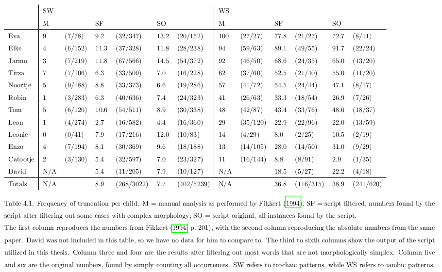Stress Errors
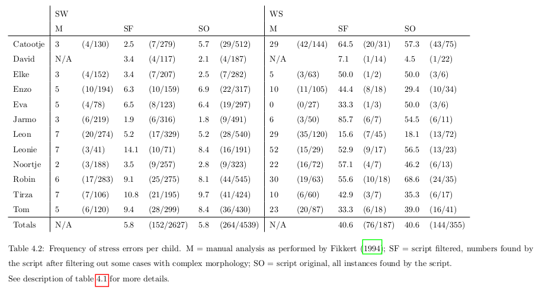Experiment 2
Ideal Situation
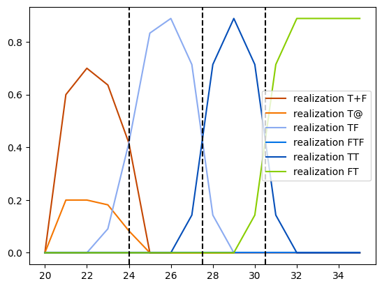CLPF
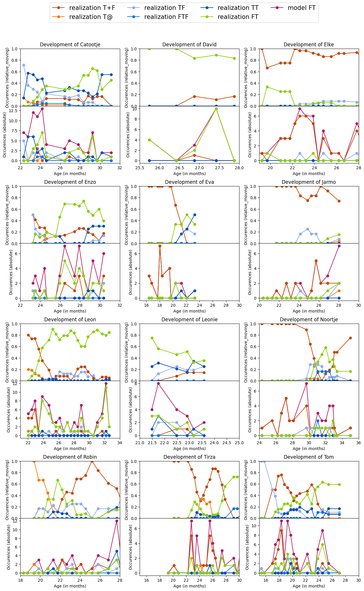Grimm
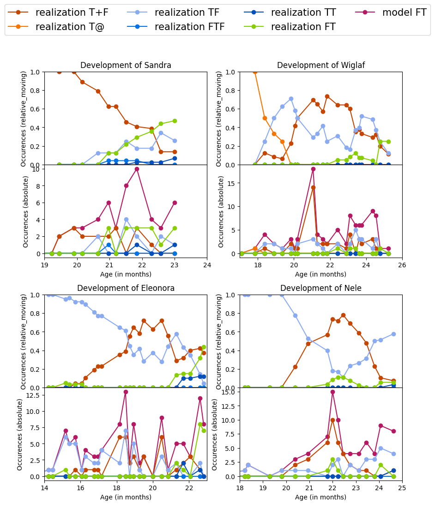Providence
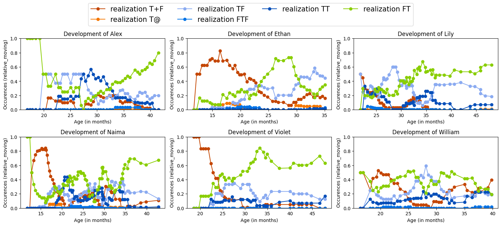All children
CLPF
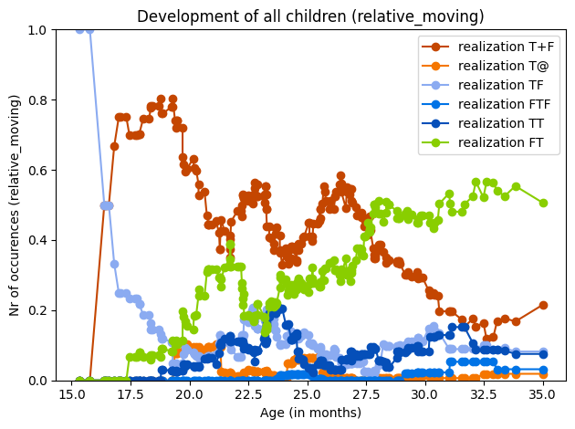Grimm
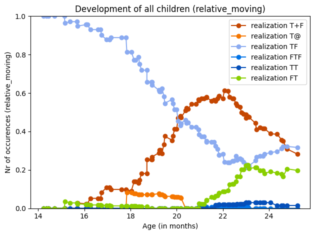Providence
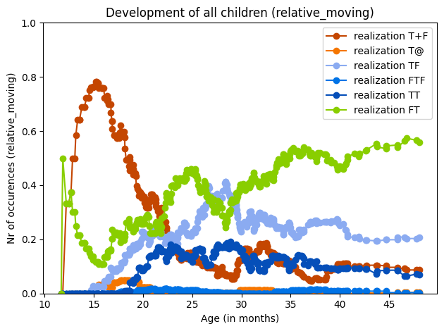Experiment 3
CLPF
Catootje
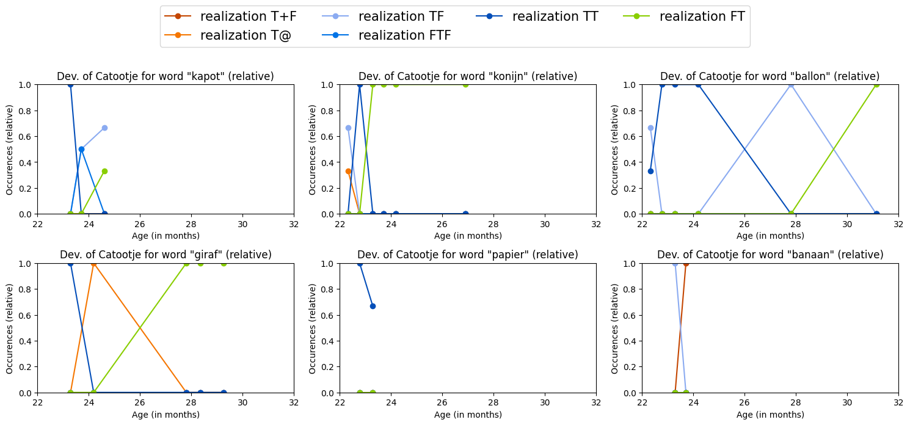Leon
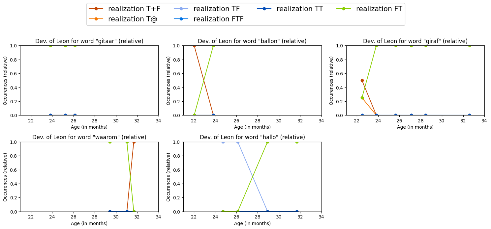Tom
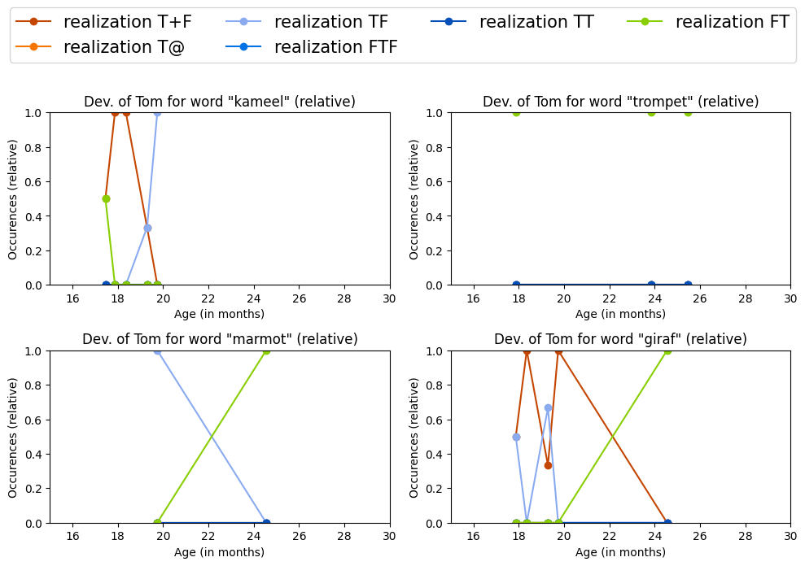Grimm
Sandra
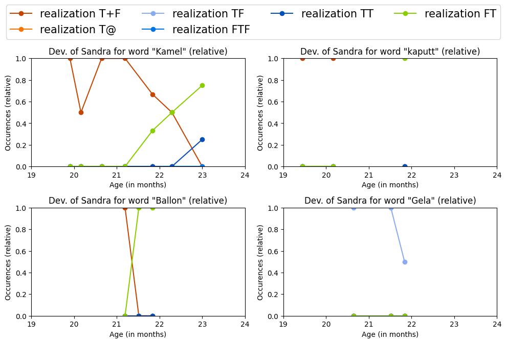Bracci
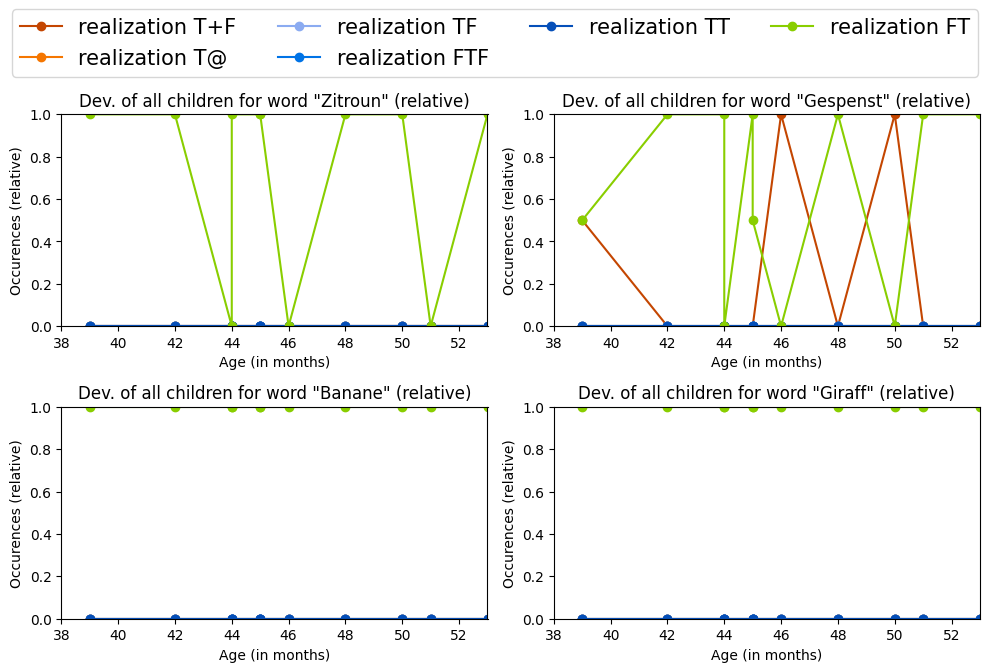Fox-Boyer
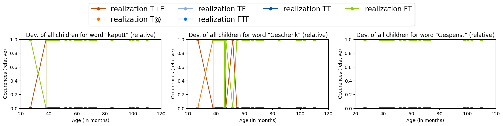Experiment 4
CLPF
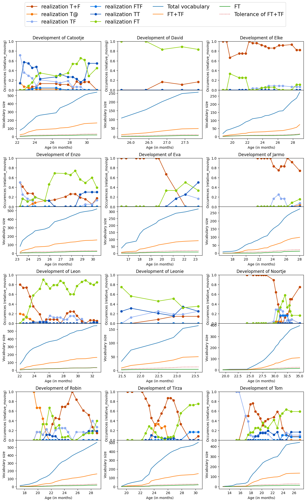Grimm
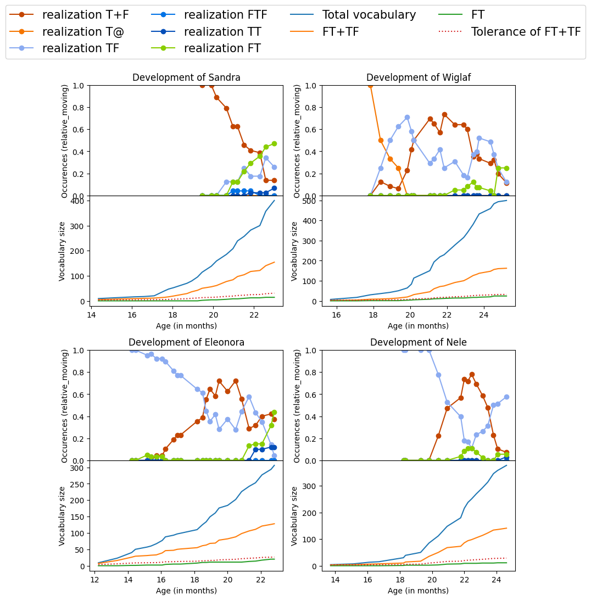Providence
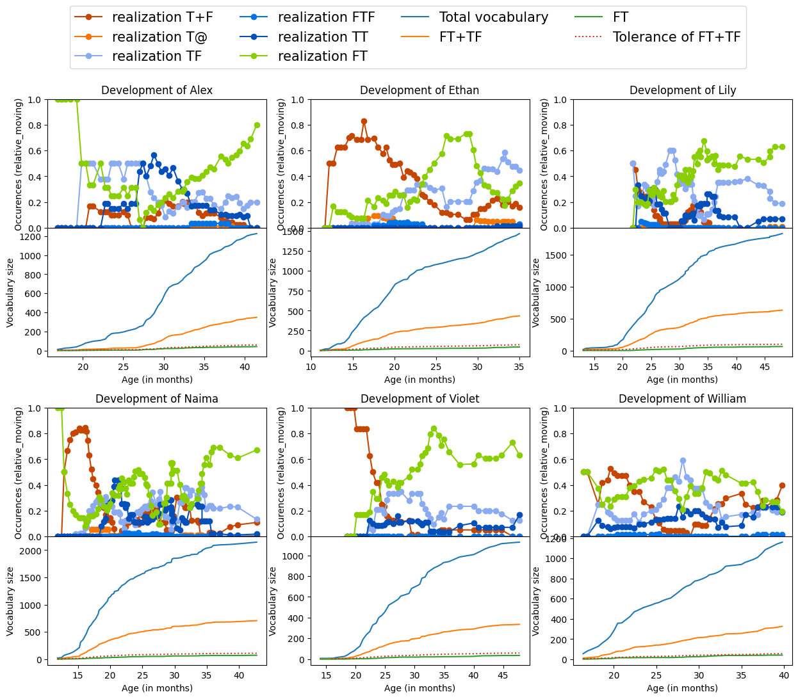References
Bracci, A. (2020). PhonBank Luxembourgish Bracci Corpus. https://doi.org/10.21415/18JG-CG50
Demuth, K. (2004). CHILDES English Providence Corpus. https://doi.org/10.21415/T5R30X
Fikkert, P. (1994). On the Acquisition of Prosodic Structure; (Doctoral dissertation). Rijksuniversiteit Leiden. The Hague.
Fox-Boyer, A. (2019). PhonBank German Fox-Boyer Corpus. https://doi.org/10.21415/5V98-NF69
Grimm, A. (2008). The Development of Early Prosodic Word Structure in Child German (Doctoral dissertation). Universität Potsdam.
Kehoe, M., & Stoel-Gammon, C. (1997). The Acquisition of Prosodic Structure: An Investigation of Current Accounts of Children’s Prosodic Development. Language, 73 (1), 113. https://doi.org/10.2307/416597
Levelt, C. (1994). On the Acquisition of Place (Doctoral dissertation). Rijksuniversiteit Leiden. The Hague.
Yang, C. (2016). The Price of Linguistic Productivity: How Children Learn to Break the Rules of Language. The MIT Press.